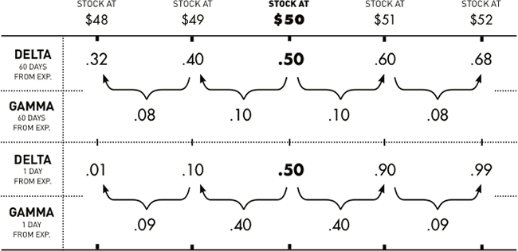
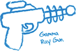
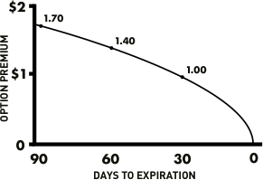
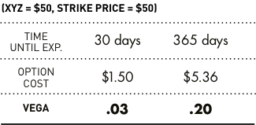

Meet the Greeks
(At least the four most important ones)
NOTE: The Greeks represent the consensus of the marketplace as to how the option will react to changes in certain variables associated with the pricing of an option contract. There is no guarantee that these forecasts will be correct.
Before you read the strategies, it’s a good idea to get to know these characters because they’ll affect the price of every option you trade. Keep in mind as you’re getting acquainted, the examples we use are “ideal world” examples. And as Plato would certainly tell you, in the real world things tend not to work quite as perfectly as in an ideal one.
Delta
What is Delta? from optionsguy
Beginning option traders sometimes assume that when a stock moves $1, the price of options based on that stock will move more than $1. That’s a little silly when you really think about it. The option costs much less than the stock. Why should you be able to reap even more benefit than if you owned the stock?
It’s important to have realistic expectations about the price behavior of the options you trade. So the real question is, how much will the price of an option move if the stock moves $1? That’s where “delta” comes in.
Delta is the amount an option price is expected to move based on a $1 change in the underlying stock.
Calls have positive delta, between 0 and 1. That means if the stock price goes up and no other pricing variables change, the price for the call will go up. Here’s an example. If a call has a delta of .50 and the stock goes up $1, in theory, the price of the call will go up about $.50. If the stock goes down $1, in theory, the price of the call will go down about $.50.
Puts have a negative delta, between 0 and -1. That means if the stock goes up and no other pricing variables change, the price of the option will go down. For example, if a put has a delta of -.50 and the stock goes up $1, in theory, the price of the put will go down $.50. If the stock goes down $1, in theory, the price of the put will go up $.50.
As a general rule, in-the-money options will move more than out-of-the-money options, and short-term options will react more than longer-term options to the same price change in the stock.
As expiration nears, the delta for in-the-money calls will approach 1, reflecting a one-to-one reaction to price changes in the stock. Delta for out-of the-money calls will approach 0 and won’t react at all to price changes in the stock. That’s because if they are held until expiration, calls will either be exercised and “become stock” or they will expire worthless and become nothing at all.
As expiration approaches, the delta for in-the-money puts will approach -1 and delta for out-of-the-money puts will approach 0. That’s because if puts are held until expiration, the owner will either exercise the options and sell stock or the put will expire worthless.
A different way to think about delta
So far we’ve given you the textbook definition of delta. But here’s another useful way to think about delta: the probability an option will wind up at least $.01 in-the-money at expiration.
Technically, this is not a valid definition because the actual math behind delta is not an advanced probability calculation. However, delta is frequently used synonymously with probability in the options world.
In casual conversation, it is customary to drop the decimal point in the delta figure, as in, “My option has a 60 delta.” Or, “There is a 99 delta I am going to have a beer when I finish writing this page.”
Usually, an at-the-money call option will have a delta of about .50, or “50 delta.” That’s because there should be a 50/50 chance the option winds up in- or out-of-the-money at expiration. Now let’s look at how delta begins to change as an option gets further in- or out-of-the-money.
How stock price movement affects delta
As an option gets further in-the-money, the probability it will be in-the-money at expiration increases as well. So the option’s delta will increase. As an option gets further out-of-the-money, the probability it will be in-the-money at expiration decreases. So the option’s delta will decrease.
Imagine you own a call option on stock XYZ with a strike price of $50, and 60 days prior to expiration the stock price is exactly $50. Since it’s an at-the-money option, the delta should be about .50. For sake of example, let’s say the option is worth $2. So in theory, if the stock goes up to $51, the option price should go up from $2 to $2.50.
What, then, if the stock continues to go up from $51 to $52? There is now a higher probability that the option will end up in-the-money at expiration. So what will happen to delta? If you said, “Delta will increase,” you’re absolutely correct.
If the stock price goes up from $51 to $52, the option price might go up from $2.50 to $3.10. That’s a $.60 move for a $1 movement in the stock. So delta has increased from .50 to .60 ($3.10 - $2.50 = $.60) as the stock got further in-the-money.
On the other hand, what if the stock drops from $50 to $49? The option price might go down from $2 to $1.50, again reflecting the .50 delta of at-the-money options ($2 - $1.50 = $.50). But if the stock keeps going down to $48, the option might go down from $1.50 to $1.10. So delta in this case would have gone down to .40 ($1.50 - $1.10 = $.40). This decrease in delta reflects the lower probability the option will end up in-the-money at expiration.
How delta changes as expiration approaches
Like stock price, time until expiration will affect the probability that options will finish in- or out-of-the-money. That’s because as expiration approaches, the stock will have less time to move above or below the strike price for your option.
Because probabilities are changing as expiration approaches, delta will react differently to changes in the stock price. If calls are in-the-money just prior to expiration, the delta will approach 1 and the option will move penny-for-penny with the stock. In-the-money puts will approach -1 as expiration nears.
If options are out-of-the-money, they will approach 0 more rapidly than they would further out in time and stop reacting altogether to movement in the stock.
Imagine stock XYZ is at $50, with your $50 strike call option only one day from expiration. Again, the delta should be about .50, since there’s theoretically a 50/50 chance of the stock moving in either direction. But what will happen if the stock goes up to $51?
Think about it. If there’s only one day until expiration and the option is one point in-the-money, what’s the probability the option will still be at least $.01 in-the-money by tomorrow? It’s pretty high, right?
Of course it is. So delta will increase accordingly, making a dramatic move from .50 to about .90. Conversely, if stock XYZ drops from $50 to $49 just one day before the option expires, the delta might change from .50 to .10, reflecting the much lower probability that the option will finish in-the-money.
So as expiration approaches, changes in the stock value will cause more dramatic changes in delta, due to increased or decreased probability of finishing in-the-money.
Remember the textbook definition of delta, along with the Alamo
Don’t forget: the “textbook definition” of delta has nothing to do with the probability of options finishing in- or out-of-the-money. Again, delta is simply the amount an option price will move based on a $1 change in the underlying stock.
But looking at delta as the probability an option will finish in-the-money is a pretty nifty way to think about it.
Gamma
Gamma is the rate that delta will change based on a $1 change in the stock price. So if delta is the “speed” at which option prices change, you can think of gamma as the “acceleration.” Options with the highest gamma are the most responsive to changes in the price of the underlying stock.
As we’ve mentioned, delta is a dynamic number that changes as the stock price changes. But delta doesn’t change at the same rate for every option based on a given stock. Let’s take another look at our call option on stock XYZ, with a strike price of $50, to see how gamma reflects the change in delta with respect to changes in stock price and time until expiration (Figure 1).
Figure 1: Delta and Gamma for Stock XYZ Call with $50 strike price
Note how delta and gamma change as the stock price moves up or down from $50 and the option moves in- or out-of-the-money. As you can see, the price of at-the-money options will change more significantly than the price of in- or out-of-the-money options with the same expiration. Also, the price of near-term at-the-money options will change more significantly than the price of longer-term at-the-money options.
So what this talk about gamma boils down to is that the price of near-term at-the-money options will exhibit the most explosive response to price changes in the stock.
 If you’re an option buyer, high gamma is good as long as your forecast is correct. That’s because as your option moves in-the-money, delta will approach 1 more rapidly. But if your forecast is wrong, it can come back to bite you by rapidly lowering your delta.
If you’re an option seller and your forecast is incorrect, high gamma is the enemy. That’s because it can cause your position to work against you at a more accelerated rate if the option you’ve sold moves in-the-money. But if your forecast is correct, high gamma is your friend since the value of the option you sold will lose value more rapidly.
Theta
Time decay, or theta, is enemy number one for the option buyer. On the other hand, it’s usually the option seller’s best friend. Theta is the amount the price of calls and puts will decrease (at least in theory) for a one-day change in the time to expiration.
Figure 2: Time decay of an at-the-money call option
This graph shows how an at-the-money option’s value will decay over the last three months until expiration. Notice how time value melts away at an accelerated rate as expiration approaches.
This graph shows how an at-the-money option’s value will decay over the last three months until expiration. Notice how time value melts away at an accelerated rate as expiration approaches.
In the options market, the passage of time is similar to the effect of the hot summer sun on a block of ice. Each moment that passes causes some of the option’s time value to “melt away.” Furthermore, not only does the time value melt away, it does so at an accelerated rate as expiration approaches.
Check out figure 2. As you can see, an at-the-money 90-day option with a premium of $1.70 will lose $.30 of its value in one month. A 60-day option, on the other hand, might lose $.40 of its value over the course of the following month. And the 30-day option will lose the entire remaining $1 of time value by expiration.
At-the-money options will experience more significant dollar losses over time than in- or out-of-the-money options with the same underlying stock and expiration date. That’s because at-the-money options have the most time value built into the premium. And the bigger the chunk of time value built into the price, the more there is to lose.
Keep in mind that for out-of-the-money options, theta will be lower than it is for at-the-money options. That’s because the dollar amount of time value is smaller. However, the loss may be greater percentage-wise for out-of-the-money options because of the smaller time value.
When reading the plays, watch for the net effects of theta in the section called “As time goes by.”
Figure 3: Vega for the at-the-money options based on
Stock XYZ

Obviously, as we go further out in time, there will be more time value built into the option contract. Since implied volatility only affects time value, longer-term options will have a higher vega than shorter-term options.
When reading the plays, watch for the effect of vega in the section called “Implied volatility.”
Vega
You can think of vega as the Greek who’s a little shaky and over-caffeinated. Vega is the amount call and put prices will change, in theory, for a corresponding one-point change in implied volatility. Vega does not have any effect on the intrinsic value of options; it only affects the “time value” of an option’s price.
Typically, as implied volatility increases, the value of options will increase. That’s because an increase in implied volatility suggests an increased range of potential movement for the stock.
Let’s examine a 30-day option on stock XYZ with a $50 strike price and the stock exactly at $50. Vega for this option might be .03. In other words, the value of the option might go up $.03 if implied volatility increases one point, and the value of the option might go down $.03 if implied volatility decreases one point.
Now, if you look at a 365-day at-the-money XYZ option, vega might be as high as .20. So the value of the option might change $.20 when implied volatility changes by a point (see figure 3).
Where's Rho?
If you’re a more advanced option trader, you might have noticed we’re missing a Greek — rho. That’s the amount an option value will change in theory based on a one percentage-point change in interest rates.
Rho just stepped out for a gyro, since we don’t talk about him that much in this site. Those of you who really get serious about options will eventually get to know this character better.
For now, just keep in mind that if you are trading shorter-term options, changing interest rates shouldn’t affect the value of your options too much. But if you are trading longer-term options such as LEAPS, rho can have a much more significant effect due to greater “cost to carry.”
Today's Trader Network
|
All-Star Trade Report |
Options Guy Blog |
Videos, webinars and more |